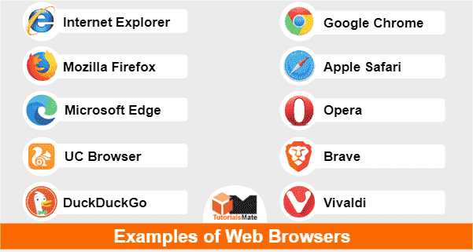

Web Browsers
Definition: A web browser is a software application used to access and view websites on the internet. It retrieves, presents, and traverses information resources on the World Wide Web.
How it works: When a user enters a URL into the browser's address bar, the browser sends a request to the web server hosting the website. The server responds by sending the requested web page, which the browser then renders and displays to the user.
Examples: Some popular web browsers include Google Chrome, Mozilla Firefox, Microsoft Edge, Safari, and Opera. Each browser offers unique features and capabilities for users to explore the web.
